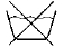

세탁기능사 (2006-07-16 기출문제)
1과목: 세정이론
1. 의류에 대한 기술 진단의 방법이 아닌 것은?
- 오점의 진단
- 가공표시의 진단
- 부속품의 유무 진단
- 의류의 마모 진단
(정답률: 79%)

2. 석유계 용제로 세정 시 세정온도가 몇℃ 이하로 되면 용해력이 저하되는가?
- 10℃
- 15℃
- 20℃
- 35℃
(정답률: 52%)
3. 드라이클리닝 용제로서 바람직하지 않은 것은?
- 기계의 부식성이나 독성이 적을 것
- 인화점이 낮고 가연성일 것
- 의류품을 상하게 하지 않을 것
- 값이 싸고 공급이 안정할 것
(정답률: 75%)
4. 의류의 기술 진단 시 고액상품 그룹에 해당 되지 않는 것은?
- 모피 제품
- 폴리에스테르 제품
- 실크 제품
- 유명 브랜드 제품
(정답률: 68%)
5. 다음의 표백제 중 염소계 산화표백제는?
- 차아염소산나트륨
- 아황산가스
- 하이드로슬파이트
- 과산화수소
(정답률: 79%)
6. 클리닝에서 보다 고차원의 기능을 다하는 특수서비스에 해당 되는 것은?
- 프레스 서비스
- 패션케어 서비스
- 스팀 서비스
- 살균 서비스
(정답률: 93%)
7. 합성 섬유를 세탁 후 유연제로 처리함으로써 얻을 수 있는 주된 효과는?
- 강도 증가
- 통기성 증가
- 대전성 방지
- 취화성 감소
(정답률: 82%)
8. 세정액 청정화 장치의 종류로서 맞는 것은?
- 리프필터, 튜브필터, 스프링필터, 증류식
- 여과제, 흡착제, 필러, 청정통, 카트리지
- 필터, 청정통, 카트리지, 증류식
- 리프필터, 필터, 파우다, 청정통, 카트리지
(정답률: 78%)
9. 계면활성제에 대한 설명 중 틀린 것은?
- 물의 계면장력을 증가시켜 준다.
- 친수기와 친유기를 동시에 갖는다.
- 직물에 묻은 오염물질을 유화 분산시킨다.
- 기포성을 증가하고 세척작용을 향상 시킨다.
(정답률: 80%)
10. 드라이클리닝의 준비공정에서 용제의 조정사항 중 틀린 것은?
- 펌프를 회전시켜 용제를 탱크로부터 퍼올려 와서, 필터간을 순환시킨다.
- 분말에 용제를 첨가하여 반죽상태로 된 것을 투입구에 투입 한다.
- 필터의 오점 제거 작동이 시작하기 전 그리고 투시유리가 투명하게 되기 전에 반드시 용제를 순환시킨다.
- 소프에 소량의 물을 첨가하여 그 위에 소량의 용제로 묽게한 것을 투입구에 넣는다.
(정답률: 48%)
11. 세탁용 보일러의 증기압력과 온도가 맞게 짝지워진 것은?
- 증기압 2.0kg/cm2, 온도 99.1℃
- 증기압 3.0kg/cm2, 온도 119.2℃
- 증기압 4.0kg/cm2, 온도 142.9℃
- 증기압 6.0kg/cm2, 온도 151.9℃
(정답률: 94%)
12. 다음 중 오점이 가장 잘 제거되는 섬유는?
- 비단
- 양모
- 면
- 비닐론
(정답률: 91%)
13. 다음 중 수용성 얼룩이 아닌 것은?
- 땀
- 식용유
- 된장국
- 간장
(정답률: 88%)
14. 다음의 섬유 중 가장 오염이 쉽게 되는 것은?
- 비닐론
- 나일론
- 양모
- 비스코스레이온
(정답률: 74%)
15. 면, 모, 견 등에 결합하는 경우가 많고, 기름으로 더러워진 얼룩을 장기간 방치할 때 기름이 섬유에 서 산화되어 결합하며, 표백제로 분해하여 제거가 가능한 오염의 부착 상태는?
- 물리적 부착
- 정전기에 의한 부착
- 화학 결합에 의한 부착
- 섬유 내로의 분산
(정답률: 81%)
16. 비누 거품이 가장 잘 생기는 물은?
- 연수
- 경수
- 해수
- 지하수
(정답률: 81%)
17. 게이지의 압력이 6kg/cm2인 보일러의 압력을 절대압력(kg/cm2) 으로 계산하면 얼마인가?
- 4
- 5
- 6
- 7
(정답률: 90%)
18. 다음 중 카트리지식 청정장치를 설명한 것은?
- 흡착제와 용제의 접촉이 길어 청정능력이 높아 가장 많이 사용되고 있다.
- 쇠망에 여과제 층을 부착시킨 장치이며 여과지와 흡착지가 분류된 것이다.
- 여과지와 흡착제다 별도로 되어 있고, 여과 면적이 넓고 흡착제의 양이 많아 오래사용한다
- 스크린필터라고도 하며 모양은 평판 상으로 필터를 8~10개 나란히 세운 것이 1세트이다.
(정답률: 67%)
19. 대전방지제인 4차 암모늄염, 부식방지제인 아민염 등의 계면 활성제는?
- 양이온계
- 음이온계
- 양성계
- 비이온계
(정답률: 76%)
20. 석유계 용제로 드라이클리닝 할 때 재오염이 많이 발생 되는 시간대는?
- 3~5분 경과시
- 9~10분 경과시
- 12~15분 경과시
- 17~20분 경과시
(정답률: 81%)
2과목: 기술관리
21. 가정용 세탁기에 비해 론드리(laundry) 방법의 특징이 아닌 것은?
- 끝마무리에서 고온, 고압이 사용되므로 마무리 효과가 좋다.
- 알칼리 조제의 사용으로 오염이 잘 빠진다.
- 마무리 하는 시간이 짧고 기술적인 숙달이 필요 없다.
- 물에 침지하여 헹구는 방식으로 가정용 세탁기에 비해 세제, 물 등의 절약 효과가 크다.
(정답률: 79%)
22. 물속에 용해되어 있는 경화염류의 함유량을 표시하는 단위는?
- 농도
- 경도
- 산가
- 알칼리도
(정답률: 57%)
23. 론드리(laundry) 공정에서 애벌빨래에 관한 설명으로 틀린 것은?
- 알칼리 세제를 사용하여 저온으로 오염을 제거 할 수 있다.
- 오염이 많아 세제의 낭비가 되는 것을 막을 수 있다.
- 금속비누가 되는 것을 방지한다.
- 일반적으로 합성섬유에 많이 이용되고, 주로 와셔를 사용하며 세제로 때를 완전히 없앤다.
(정답률: 56%)
24. 수성 잉크얼룩을 제거하려고 과망간산칼륨을 칠하였더니 진한 자주 색이 되었다. 이것을 환원시키고자 한다면 어떤 표백제를 사용하는 것이 가장 좋은가?
- 하이드로설파이트
- 메탈알콜
- 과산화수소
- 아황산가스
(정답률: 60%)
25. 다음의 손세탁 방법 줌에서 모직이나 편성물 또는 실크 등의 의류를 손상 하지 않게 세탁하는 방법으로 가장 적당한 것은?
- 두드려 빨기
- 흔들어 빨기
- 비벼 빨기
- 삶아 빨기
(정답률: 79%)
26. 드라이클리닝 처리공정 중 전처리 공정에 대한 설명으로 맞는 것은?
- 전처리는 용제를 공정하는 공정이다.
- 일반적으로 스프레이법과 브러싱법이 있다.
- 본 세탁에서 쉽게 제거되는 오점을 제거하는 공정이다.
- 브러싱을 할 때는 옷감의 털이 다소 일어나더라도 오점을 완전히 제거해야 한다.
(정답률: 71%)
27. 드라이클리닝이 불가능한 것을 세제액으로 적신 후 곧 바로 처리하는 고급 세탁 방법으로 맞는 것은?
- 건식세탁
- 웨트클리닝
- 론드리
- 스트롱 차지
(정답률: 84%)
28. 다음 중에서 다림질의 최적 조건에 포함되는 항목으로 가장 옳은 것은?
- 압력, 공기, 수분, 영양
- 공기, 시간, 증기, 풀
- 온도, 압력, 수분, 시간
- 온도, 수분, 시간, 용제
(정답률: 81%)
29. 다음 중 웨트클리닝을 필요로 하는 의류는?
- 지퍼가 달린 면바지
- 무늬가 있는 속치마
- 여러 개의 호크가 달린 남방
- 염화비닐 합성피혁
(정답률: 76%)
30. 드라이클리닝으로 인하여 의류제품의 손상이 가장 적은 것은?
- 합성피혁, 고무제품, 코팅제품, 비닐제품
- 모직물, 합성섬유, 견직물류
- 은박이나 금박 접착제품, 합성수지 제품
- 모피류, 쎄무제품, 고무제품류
(정답률: 75%)
31. 다음 중 물세탁의 특징이 아닌 것은?
- 세탁방법이 간단하다.
- 특별한 설비가 필요 없다.
- 세탁방법이 다소 복잡하나 옷감의 손상이 적다
- 깨끗하게 세탁할 수 있다.
(정답률: 61%)
32. 섬유가 마찰 등에 의하여 발생된 전기적 힘에 의하여 생기는 오염 부착 기구는?
- 기계적 부착
- 정전기에 의한 부착
- 화학결합에 의한 부착
- 분자 간 인력에 의한 부착
(정답률: 73%)
33. 폴더(Folder)라는 기계의 설명이 옳은 것은?
- 물품을 시트 롤러에 잘 들어가도록 한 장씩 펴주는 기계다.
- 물품을 좌·우 양방향과 앞쪽으로 당기면서 시트 롤러에 밀어 넣는 기계다.
- 마무리에서 다림질한 물품을 접어 개는 기계다
- 시트가 접어 개어진 후 쌓고, 일정의 장수가 되면 컨베이어에 의해 물품을 포장하는 곳으로 보내는 기계다.
(정답률: 60%)
34. 웨트클리닝에서 주의해야 할 점이 아닌 것은?
- 세탁 전에 색이 빠지는가 조사한다.
- 수축되기 쉬운 것은 치수를 재어 놓는다.
- 색이 빠지기 쉬운 것은 될 수 있는 대로 한점씩 빤다.
- 의류의 종류, 성질에 관계없이 일률적으로 처리한다.
(정답률: 83%)
35. 세정작용 과정의 순서가 바르게 된 것은?
- 습윤→침투→흡착→팽윤→분리→분산→유화
- 침투→흡착→습윤→팽윤→분리→분산→유화
- 습윤→팽윤→흡착→침투→분리→분산→유화
- 유화→침투→흡착→팽윤→분산→분리→습윤
(정답률: 74%)
36. 다음에서 동물성 섬유가 아닌 것은?
- 양모
- 캐시미어
- 견
- 아크릴
(정답률: 70%)
37. 재생섬유에 대한 설명 중 가장 옳은 것은?
- 재성섬유는 면, 마와는 달리 물속에서는 강도가 많이 떨어지므로 물세탁에 주의하여야 한다.
- 재생섬유는 면, 마와는 달리 물속에서는 강도가 어느 정도 증가한다.
- 재생섬유는 면, 마와 같이 물속에서 강도가 같다.
- 재생섬유는 면, 마와는 달리 물속에서는 강도가 80% 정도 떨어진다.
(정답률: 63%)
38. 폴리노직 레이온은 어느 계통의 섬유에 속하는가?
- 동물성 섬유
- 식물성 섬유
- 재생섬유
- 합성 섬유
(정답률: 72%)
39. 다음 그림과 같은 기호로 표시된 제품의 취급 방법은?

- 물세탁은 되지 않는다.
- 물세탁을 낮은 온도에서 한다.
- 물세탁은 하되 세제를 사용하지 않는다.
- 드라이클리닝 하지 말고 중성세제로 물세탁 한다.
(정답률: 91%)
40. 다음 중 저마 섬유에 대한 설명으로 옳은 것은?
- 현미경으로 관찰하면 측면은 리본모양으로 되어 있고, 꼬임이 있다.
- 열 전도성이 좋아 동절기 옷감으로 사용되고, 세탁 시 알칼리에 대한 침해가 적다.
- 일명 삼베라고도 하며 섬유의 단면은 삼각형이고 측명에는 마디와 선이 있다.
- 일명 모시라고도 하며 오래전부터 한복감으로 사용되었고 식물성섬유 중 강도가 가장 크다.
(정답률: 78%)
3과목: 클리닝대상품
41. 벨벳(velvet)과 같은 옷감은 어떤 제품에 속하는가?
- 파일 제품
- 부직포 제품
- 편직물 제품
- 모피 제품
(정답률: 74%)
42. 폴리에스테르 직물을 염색할 수 있는 염료로 가장 적당한 것은?
- 반응성 염료
- 분산 염료
- 염기성 염료
- 직접 염료
(정답률: 83%)
43. 섬유의 분류에서 아세테이트는 어느 섬유에 해당 되는가?
- 셀룰로스 섬유
- 단백질 섬유
- 합성 섬유
- 반합성 섬유
(정답률: 65%)
44. 다음 중 재생섬유의 원료는?
- a-셀룰로스
- B-셀룰로스
- 합성 섬유
- 반합성 섬유
(정답률: 82%)
45. 셀룰로스 섬유의 염색에 적합하지 못한 염료는?
- 직접 염료
- 분산 염료
- 반응성 염료
- 배트 염료
(정답률: 62%)
46. 산성염료에 가장 염색이 불량한 것은?
- 양털
- 명중
- 나일론
- 무명
(정답률: 59%)
47. 직물에 비교해 편물의 특성을 설명한 것 중 틀린 것은?
- 신축성이 크다.
- 유연성이 크다
- 함기량이 많다.
- 내구성이 크다.
(정답률: 61%)
48. 클리닝 대상품에 관한 다음 사항 중 옳게 기술된 것은?
- 클리닝 대상품은 섬유 제품만이다.
- 클리닝의 주된 대상품은 산업재료이다.
- 섬유 제품뿐만 아니라 비 섬유 제품도 클리닝 대상품으로써 그 양이 점차 증가 되고 있다.
- 클리닝 대상품이란 특수 의류만 말하는 것이다
(정답률: 69%)
49. 한복 세탁에 대한 설명 중 틀린 것은?
- 면, 마는 용제속에서 세탁하면 모, 나일론에 비해 세척률이 낮기 때문에 물세탁을 하여야 한다.
- 오염이 심한 견으로 만든 한복은 물세탁을 하여도 무방하다.
- 견으로 만든 한복을 물세탁하면 광택이나 촉감이 저하하고, 풀기로 인한 맵시가 알칼리성에 의해 손상받기 쉽다.
- 견으로 만든 한복만이라도 제품의 품질관리 표시상에 물세탁이 가능한 표시가 없으면 드라이클리닝 하는 것이 원칙이다.
(정답률: 72%)
50. 면 섬유의 정련에 사용할 수 있는 약제로 가장 적당한 것은?
- 수산화나트륨
- 초산
- 질산
- 염산
(정답률: 72%)
51. 세탁 견뢰도의 등급은 몇 등급으로 이루어져 있는가?
- 2
- 3
- 4
- 5
(정답률: 91%)
52. 무명섬유의산과 알칼리에 대한 작용으로 옳은 것은?
- 산이나 알칼리 양쪽 모두 강한 편이다.
- 산에는 강하고, 알칼리에는 약한 편이다.
- 산에는 약하고 알칼리에는 강한 편이다.
- 산이나 알칼리 양쪽 모두 약한 편이다.
(정답률: 67%)
53. 명주 섬유의 증량이나 매염제로 이용되는 약품은?
- 질산
- 염산
- 탄닌산
- 과산화수소
(정답률: 40%)
54. 견 섬유와 일광과의 관계 중에서 옳은 것은?
- 다른 천연섬유에 비하여 일광에 가장 약하다.
- 자외선은 수일간 조사하여도 견 섬유에 변화가 없다.
- 견 섬유를 구성하는 아미노산은 자외선에 강하다.
- 생사가 정련 견보다 일광에 약하다.
(정답률: 71%)
55. 양털섬유를 형성하는 단백질의 주성분은?
- 셀룰로스
- 케라틴
- 피브로인
- 글리신
(정답률: 54%)
4과목: 공중위생법규
56. 세제를 사용하는 세탁용 기계의 안전관리를 위하여 밀폐형이거나 용제회수기가 부착된 세탁용 기계를 사용하지 아니한 때 3차 위반 시 행정처분 기준은?
- 경고
- 영업정지 10일
- 개선명령
- 영업장 폐쇄명령
(정답률: 73%)
57. 영업소 폐쇄명령을 받고도 계속하여 영업을 하는 때에 관계 공무원이 폐괘하기 위한 행위로 올바르지 않은 조치는?
- 영업소의 간판 기타 영업 표지물의 제거 행위
- 영업을 위한 기구 도는 시설물을 사용할 수 없게 하는 봉인 작업
- 영업소에 고객이 출입할 수 없도록 출입문에 지켜서 있는 행위
- 당해 영업소가 위법한 영업소임을 알리는 게시물의 부착 행위
(정답률: 84%)
58. 다음 중 공중위생 감시원의 자격이 없는 사람은?
- 환경산업기사 이상의 자격증이 있는 자
- 대학에서 위생학 분야를 전공하고 졸업한 자
- 2년 이상 공중위생 행정에 종사한 경력이 있는 자
- 외국에서 환경기사의 면허를 받은 자
(정답률: 59%)
59. 의류, 기타 섬유제품이나 피혁제품 등을 세탁하는 영업은?
- 세탁업
- 제조업
- 판매업
- 위생관리용역업
(정답률: 87%)
60. 세탁업자가 준수하여야 하는 위생관리 기준으로 틀린 것은?
- 드라이클리닝용 세탁기는 유기용제의 누출이 없도록 항상 점검하여야 한다.
- 세탁물에는 세탁물의 처리에 사용된 세제가 남지 아니하도록 하여야 한다.
- 보관중인 세탁물에 좀이나 곰팡이 등이 생성되지 않도록 위생적으로 관리 하여야 한다.
- 영업장 안의 조명도는 100룩스 이상이 되도록 유지하여야 한다.
(정답률: 81%)